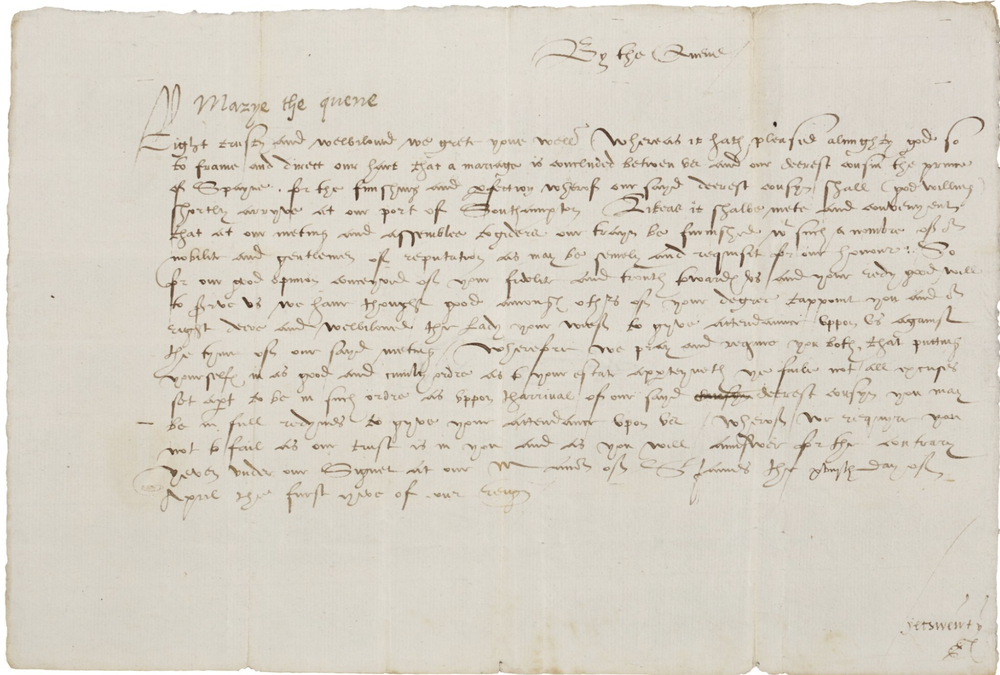

# A tibble: 1,393 × 10
from to date_from date_to place_from y_from x_from place_to x_to y_to
<chr> <chr> <dbl> <dbl> <chr> <dbl> <dbl> <chr> <dbl> <dbl>
1 Charl… The … 16010701 1.60e7 <NA> NA NA <NA> NA NA
2 T.B. Sir … 15980101 1.60e7 <NA> NA NA Court o… -0.138 51.5
3 Sir W… Priv… 15900910 1.59e7 Kilmainham NA NA Greenwi… 0 51.5
4 Isaac… Quee… 15980228 1.60e7 Paris 48.9 2.35 Greenwi… 0 51.5
5 Queen… Offi… 15570709 1.56e7 <NA> NA NA <NA> NA NA
6 Willi… Sir … 15711026 1.57e7 Edinburgh 56.0 -3.19 Court o… -0.138 51.5
7 Queen… Thom… 15590111 1.56e7 <NA> NA NA Newcast… -1.61 55.0
8 Queen… Robe… 15680204 1.57e7 <NA> NA NA Dublin -6.26 53.3
9 Adolf… Sir … 15880805 1.59e7 Utrecht 52.1 5.12 Paris 2.35 48.9
10 Georg… John… 15330101 1.53e7 <NA> NA NA <NA> NA NA
# ℹ 1,383 more rowsCase-study 3: The Tudor Network of Letters
The third case-study deals with The Tudor Networks of Power data set (Ahnert et al. 2023), which contains a large corpus of letters originated from the correspondence kept in the Tudor State Papers, thus covering the period from the ascension of Henry VIII (1509) and the death of Elizabeth I (1603), an important period in British and European history.1
The letter below, for instance, dated in April 1554, was sent from Queen Mary I (“Marye the quene”) to inform Lord Paget of the imminent arrival of Phillip II, Prince of Spain, to England (more examples here). Lord Paget, an important statesman and diplomat, was crucial during the negotiations to secure a marriage agreement between Mary and Philip, who were married at Winchester Cathedral on July 1554.

These letters form part of the official government records of the Tudor period in England. In particular, they store the communications between the members of the government: the monarchs’ secretaries and the monarchs themselves, local government officials, overseas embassies and military missions. They also include intercepted and seized correspondence, as well as the petitions to government from across Tudor Society. The provide therefore a privileged window into the functioning of the Tudor governments and the society as a whole.
In total, there are almost 140,000 letters, exchanged between more than 20,000 historical actors. You can check the wonderful visualisation the authors made available here.] This digitised source that has opened up new ways of studying the Early Modern Period (Ahnert and Ahnert 2023). Given the scale of the dataset, we will work with a 1 per-cent random sample to reduce the computing requirements. The resulting data frame contains 1,393 rows, which in our case refer to letters. The image below shows how the first rows in this data set look like.
This source includes information on the sender (from) and the receiver (to), as well the dates these letters were sent and received (date_from and date_to). Note that the first two columns also define the direction of the relationship: from A to B. The same person can be therefore found as sender and/or recipient (he/she can also send/receive one or multiple letters to/from the same or different individuals).2 This dataset also indicates the locations of the sender and the recipient, as well as their subsequent spatial coordinates: longitude and latitudes (x_from and y_from; x_to and y_to).3 Mapping these locations allow having a sense of the reach of the Tudor governments (their worldview).
Given that these letters document the relationships between these historical actors, we will treat this data set as a social network. Explicitly analysing the relationships between these actors helps understanding the complex web of social and institutional relationships that shaped their world: the presence of distinct communities, the role that each member played within the wider network; the emergence, evolution and demise of particular communities; the features that made these networks different; etc. As the authors made perfectly clear, the letters that ended up in this data set constitute a selected sample of all existing letters, so any inference should be taken with caution.
References
Ahnert, Ruth, and Sebastian E. Ahnert. 2023. Tudor Networks of Power. Oxford University Press.
Ahnert, Ruth, Sebastian E. Ahnert, Jose Cree, and Lotte Fikkers. 2023. “Tudor Networks of Power - Correspondence Network Dataset.” Cliodynamics. Apollo - University of Cambridge Repository. https://doi.org/10.17863/CAM.99562.
Footnotes
Apart from these two monarchs, Edward VI (1547-1553) and Mary I (1553-1558) also reigned during this period.↩︎
Although the data set we are exploring does not contain information on the content of the letters themselves, the original source includes a description of the letter contents Ahnert and Ahnert (2023, 147–204). This would constitute another layer. Here, we are just concern with the metadata (sender, recipient, place of origin, date, etc.) but this does not preclude the analysis of the texts themselves in different stages of the research process.↩︎
The original data only reports the sending location. We have curated it and completed the information assuming that those receiving the letters did so in the location that was most common when sending letters (we should be aware nonetheless that we are not sure where exactly the letter was dispatched to).↩︎